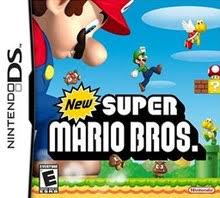

Although they both didnt start at the same time, I remember getting my first ever gaming console on christmas when I was 7 years old. Honestly, I dont remember much about what I did or how I rected towards it but I do know I was addicted. And that was when my parents implemented the no gaming on school days rule. I would always go with my cousin and just play pictochat with him. I didnt even have a proper game, it was juts him and I talking to eachother making different drawing through that app. I remember thinking it was super cool how that worked, how I can communicate with my cousin without actually talking. I did it all the time. Just type in pictochat. I thought it was amazing. Of course I later got New Super Mario Bros. I would play that with hours on end. I had a lot of Mario games that I would waste my time on. I always thought mario games were cool. I remember one day looking and playing the games and wondering how they were made, how were mario games made to be so enjoyable? I got really interested on the insides of the games not just how they played but how they worked as well. This was later on though, way after my ds. That is how I began on the gamer journey. How I got interseted in the thing I still love the most.
